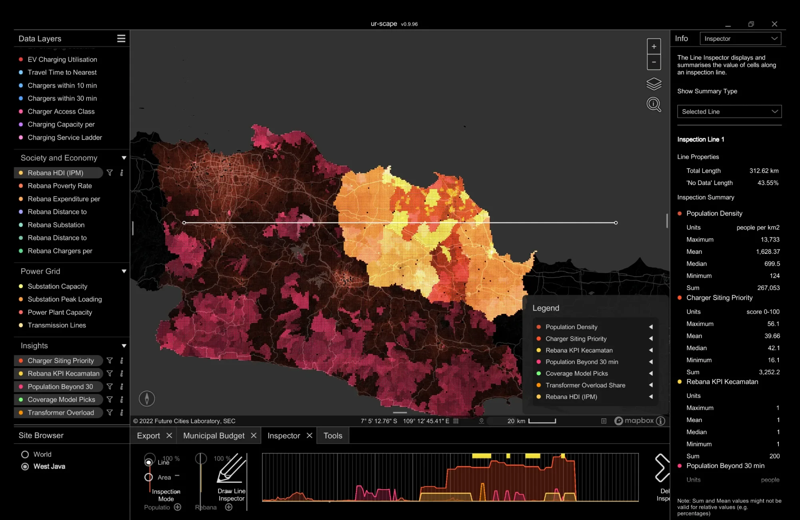

What is really happening in Rebana: EV charging, access and the grid
The Rebana metropolitan area (Subang, Indramayu, Majalengka, Sumedang, Kuningan, Kab. and Kota Cirebon) is still being built: Rp 36.7 trillion of investment arrived in 2025, alongside 13 industrial zones (KPI), Kertajati airport and Patimban port. This report asks one simple question of the data we already have: who can already charge an electric car here, who cannot, and is the grid ready if the area is built out as planned? Every number below is computed from raw data in the pathwaysevcharging repository and can be inspected cell by cell in the layer map or in ur-scape.
Downloads
.pptx · 1.3 MB Slide deck (PDF)The same 12 slides for reading or printing
.pdf · 0.9 MB ur-scape packageSite "West Java", 28 layers, installer script, README
.zip · for ur-scape 0.9.9x QGIS packageGeoTIFF per layer plus charger points (GeoJSON)
.zip · EPSG:4326
To load the ur-scape package: unzip it and run python3 install.py "/path/to/ur-scape/Data", or copy Sites/West Java/ into ur-scape's Data/Sites/ and append layers_add.csv and citations_add.csv to the files of the same name. Then choose West Java in the Site Browser.
1. Executive summary: seven facts, one story
2. The area in context
Seven regencies and cities, 9.2–9.4 million people
| Area | Population (M) | KPI | Investment 2025 (Rp T) | Spending per capita (Rp k/yr) |
|---|---|---|---|---|
| Kab. Cirebon | 2.45 | 1 | 4.01 | 11,769 |
| Kab. Indramayu | 1.95 | 6 | 3.35 | 11,316 |
| Kab. Subang | 1.66 | 3 | 18.2 | 12,144 |
| Kab. Majalengka | 1.36 | 3 | 3.36 | 11,094 |
| Kab. Kuningan | 1.24 | 0 | – | 10,707 |
| Kab. Sumedang | 1.17 | 0 | 5.63 | 11,963 |
| Kota Cirebon | 0.36 | 0 | – | 13,341 |
Total 2025 investment Rp 36.67 T (BKPM via BP Rebana; 2026 H1 Rp 21.59 T, about 30 % of West Java). Largest industrial zones: Cipali Subang Barat 10,408 ha, Losarang 6,170 ha, Cipali Subang Timur 4,806 ha, Patrol 4,141 ha. Employment target for 2030: 1.78 million. Spending is BPS adjusted per-capita expenditure.
Generation inside the area: 2.65 GW coal, 110 MW hydro
| Plant | MW | Status |
|---|---|---|
| PLTU Cirebon-2 | 1,000 | operating since May 2023 |
| PLTU Indramayu (Sukra) | 990 | 3 × 330 MW, since 2011 |
| PLTU Cirebon-1 | 660 | early retirement in 2035 cancelled, Dec 2025 |
| PLTA Jatigede | 110 | operating |
| Jatigede floating solar | 100 | planned (PLN–Masdar MoU 2025) |
| Gantar solar, Indramayu | 100 | planned (2024) |
Implication: every kWh of EV charging in Rebana today comes in practice from the coal-based Java–Bali grid. The emissions benefit depends on the generation mix, not on the cars.
3. Charging today: the toll corridor, not the towns
Energy by site type (March 2026)
The top five sites (KM 166 A, CSE UP3 Cirebon, KM 164 B, KM 229 B, KM 101 B) sell 42 % of Rebana's energy. Five sites see 10 or fewer sessions a month. The daily peak runs from 13:00 to 17:00 (869 sessions in the 14:00 hour across the month): a travel pattern, not a commuting pattern.
| Area | Units | kW | Sessions Mar 26 | MWh | Rp M | Home charging | Chargers / 100k |
|---|---|---|---|---|---|---|---|
| Kab. Cirebon | 39 | 3,164 | 4,161 | 118.8 | 316.5 | 24 | 2.49 |
| Kab. Majalengka | 22 | 2,259 | 2,524 | 64.7 | 159.7 | 9 | 1.74 |
| Kab. Subang | 15 | 818 | 2,351 | 55.1 | 149.4 | 16 | 1.20 |
| Kota Cirebon | 13 | 881 | 2,053 | 55.5 | 143.8 | 17 | 1.96 |
| Kab. Indramayu | 16 | 587 | 1,508 | 30.3 | 79.2 | 9 | 1.06 |
| Kab. Sumedang | 12 | 260 | 650 | 13.5 | 35.3 | 12 | 1.30 |
| Kab. Kuningan | 12 | 350 | 444 | 9.9 | 26.2 | 3 | 1.16 |
4. Access and spatial equity: who can charge
Method: for 1,981 Rebana villages (out of 6,669 in West Java, Jakarta and Banten) we take the car travel time on the OSM road network (r5r village-to-village matrix, 60-minute cap; matrix by Alyas Widita) to the nearest village with a public charger (1,556 public sites, PLN Charge.IN June 2026). Need is measured as Kontur 2023 population per village.
Share of residents within 10 minutes of a charger
| Area | Villages | Residents | ≤10 min | ≤15 min | ≤30 min | >30 min (people) | Median (min) |
|---|---|---|---|---|---|---|---|
| Kota Cirebon | 20 | 407,947 | 78 % | 91 % | 91 % | 35,153 | 5 |
| Kab. Cirebon | 408 | 2,051,288 | 39 % | 68 % | 97 % | 59,318 | 12 |
| Kab. Indramayu | 316 | 1,694,968 | 19 % | 42 % | 96 % | 70,640 | 18 |
| Kab. Subang | 253 | 1,584,087 | 19 % | 36 % | 87 % | 207,104 | 19 |
| Kab. Majalengka | 338 | 1,210,072 | 19 % | 42 % | 86 % | 165,539 | 18 |
| Kab. Sumedang | 282 | 1,230,274 | 30 % | 48 % | 80 % | 251,878 | 16 |
| Kab. Kuningan | 364 | 1,023,679 | 30 % | 44 % | 76 % | 252,084 | 18 |
| Rebana | 1,981 | 9,202,315 | 28.6 % | 50.0 % | 88.8 % | 1,041,716 |
Equity: access follows density
Fifths of villages by density (about 1.84 million people each): the sparsest fifth has 5.4 % within 10 minutes, then 10.7 %, 19.7 %, 37.6 % and 69.5 % in the densest fifth. The concentration index of 15-minute access against density is 0.31 (West Java 0.28); against spending per person it is only 0.08. Rebana's inequality is rural versus urban, not rich versus poor. Chargers per 100,000 residents: Kab. Cirebon 2.49 · Kota Cirebon 1.96 · Majalengka 1.74 · Indramayu 1.06.
Service ladder (RQ1)
Sufficiency = E2SFCA charger kW within a 10-minute catchment per household (3.6 people) of at least 0.03 kW. West Java: 53.7 / 44.7 / 1.6 %.
5. Grid readiness: headroom sits where the chargers are not
| Area | Substation headroom (MVA) | Substations (headroom as % of capacity) |
|---|---|---|
| Kab. Indramayu | 120.6 | Haurgeulis 68.6 % · Cikedung 56.0 % · Indramayu −2.0 % · Jatibarang −2.0 % |
| Kab. Majalengka | 79.4 | Kadipaten 43.4 % · New Kadipaten 36.0 % |
| Kab. Cirebon | 77.5 | Arjawinangun Baru 56.3 % · Arjawinangun 17.2 % · Babakan 4.0 % |
| Kab. Sumedang | 58.4 | Rancaekek 36.7 % · Sumedang 22.1 % · Parakan −0.4 % |
| Kab. Kuningan | 20.4 | Mandirancan 15.4 % · Kuningan 5.0 % |
| Kab. Subang | 11.2 | Sukamandi 19.7 % · Subang −8.5 % (89.5 % of peak) |
| Kota Cirebon | −15.1 | Sunyaragi −15.1 % (86.3 % of peak, 240 MVA) |
Substations by UP3 (peak load)
| UP3 | Transformers | MVA | Peak | Transformers ≥80 % |
|---|---|---|---|---|
| Cirebon | 17 | 780 | 67.1 % | 7 (300 MVA) |
| Subang (Purwakarta) | 13 | 690 | 61.6 % | 4 |
| Indramayu | 7 | 360 | 61.6 % | 3 |
| Sumedang | 18 | 750 | 57.4 % | 2 |
Distribution transformers (20 kV / 400 V)
| UP3 | Transformers | Average load | Overloaded >100 % |
|---|---|---|---|
| Cirebon | 3,419 | 59.1 % | 354 (11.7 %) |
| Indramayu | 1,640 | 63.6 % | 122 (7.6 %) |
| Sumedang | 1,504 | 49.0 % | 21 (1.6 %) |
In Indramayu, the sub-districts with the most overloaded transformers are Sindang (19 of 90), Karangampel (12), Haurgeulis (11), Jatibarang (10) and Indramayu (9): coastal towns, not the toll corridor.
6. Where the next chargers should go: two models, one answer
Model A: siting priority by sub-district
Score 0–100 = 0.5 × need (population-weighted travel time and distance to a charger) + 0.25 × demand (log population) + 0.25 × readiness (headroom at the nearest substation). Weights are illustrative.
| # | Sub-district | Residents | Minutes | Substation headroom | Score |
|---|---|---|---|---|---|
| 1 | Pusakanagara (Subang) | 43,311 | 20.4 | Haurgeulis 69 % | 67.0 |
| 2 | Cibingbin (Kuningan) | 53,411 | 41.0 | Arjawinangun Baru 56 % | 65.9 |
| 3 | Cilebak (Kuningan) | 19,656 | 52.5 | 56 % | 65.9 |
| 4 | Krangkeng (Indramayu) | 64,954 | 29.2 | 56 % | 65.9 |
| 5 | Karangkancana (Kuningan) | 24,959 | 41.9 | 56 % | 65.3 |
| 6 | Losari (Cirebon) | 92,851 | 31.8 | 56 % | 65.2 |
| 7 | Ciwaru (Kuningan) | 33,128 | 39.5 | 56 % | 65.1 |
| 8 | Gegesik (Cirebon) | 64,187 | 28.4 | 56 % | 63.2 |
| 9 | Lemahsugih (Majalengka) | 62,910 | 36.2 | Kadipaten 43 % | 61.9 |
Lowest: Cisarua, Ganeas, Sumedang Utara, Paseh, Cimalaka (Sumedang), 6–14 minutes and already served.
Model B: 10 km coverage (greedy)
Starts from 66.9 % of residents within 10 km of a charger; each pick is the sub-district that adds the most newly covered residents.
| # | Sub-district | + residents | Coverage | Nearest substation |
|---|---|---|---|---|
| 1 | Gegesik (Cirebon) | 432,164 | 71.5 % | Arjawinangun Baru 9 km |
| 2 | Terisi (Indramayu) | 256,383 | 74.2 % | Cikedung 10 km |
| 3 | Ciasem (Subang) | 219,592 | 76.5 % | Pabuaran 19 km |
| 4 | Jatinunggal (Sumedang) | 208,427 | 78.7 % | Kadipaten 16 km |
| 5 | Pusakajaya (Subang) | 206,298 | 80.9 % | Haurgeulis 16 km |
| 6 | Tanjungsiang (Subang) | 173,952 | 82.8 % | Sumedang 16 km |
| 7 | Dukupuntang (Cirebon) | 167,628 | 84.6 % | Arjawinangun Baru 11 km |
| 8–12 | Kedokan Bunder, Bongas, Cibugel, Bangodua, Maja | +488 k | ≈ 90 % |
7. What this means for the three workshop themes
- Sustainable Mobility & Connectivity. Separate two markets: transit charging (toll roads, already working: 73 % of energy, ultra-fast ≥100 kW) and resident charging (missing: 29 % within 10 minutes, 1.5 % with sufficient capacity). Rebana's measure of success should not be the number of units but the share of residents within 10 minutes: moving from 29 % to at least 50 % means about 12 sites in the sub-districts named above. layers: Travel Time, Population Beyond 30 min, Coverage Model Picks
- Energy. Use headroom as a siting criterion, not only traffic: Haurgeulis, Cikedung, Arjawinangun Baru and Kadipaten could absorb 10–20 MW of chargers without reinforcement. In Kota Cirebon and Subang town, new chargers should come with daytime time-of-use pricing (rest areas draw 230–520 kWh per hour, peaking at 13:00–15:00, which matches solar output) or with reinforcement of the Sunyaragi and Subang substations. layers: Substation Peak Loading, Rebana Substation Headroom
- Skills. 1.78 million jobs by 2030 and 10,000 ha of industrial land in west Subang will shift load and mobility to the western north coast, where charger access is 19 % today. Planning of chargers, transformers and technician training (Electra Skill Academy: 380 occupations, 16 pathways) should follow the industrial-zone map, not today's charger map. layers: Rebana KPI Kecamatan, Transformer Overload Share
- Equity. A concentration index close to zero against spending means a class gap has not formed yet, so it can still be prevented. Kuningan and Sumedang (each with about 250,000 residents beyond 30 minutes) have no industrial zones and no large investment; left to the market, they will be served last.
- Data governance. All these layers now exist in one format anyone can open (ur-scape, QGIS, browser) and refresh from one script. What is still missing for sharper ex-ante analysis: EV registrations by sub-district by month (Samsat), the commissioning date of each charger, and the 20 kV network plan for the industrial zones.
8. The same layers in ur-scape
ur-scape is the shared visualisation platform proposed at the first workshop. All 28 layers behind this report are packaged as one ur-scape site, West Java, at 0.5 arc-minute cells (about 0.9 km), in four groups: EV Charging, Society and Economy, Power Grid, and Insights. The screenshots below were taken in ur-scape v0.9.96 with the Inspector tool: a 313 km line drawn east–west across Rebana, with the cell values along it summarised on the right and profiled at the bottom.

What the Inspector line reports
| Layer along the 313 km line | Min | Median | Mean | Max |
|---|---|---|---|---|
| Population density (people/km²) | 124 | 700 | 1,628 | 13,733 |
| Charger siting priority (0–100) | 16.1 | 42.1 | 39.7 | 56.1 |
| Rebana KPI sub-district (1 = yes) | 1 | 1 | 1 | 1 |
The line samples industrial-zone sub-districts at 200 points. Between 42 % and 53 % of the line reads "No Data", depending on which layer is active, because the Rebana-only layers stop at the Rebana border.
How to read it
Density along the line is strongly skewed (median 700, mean 1,628 people per km²): a few town cells hold most residents, which is why access shares weighted by population differ so much from what the map's area suggests. Siting priority along the same line ranges from 16 to 56, and the profile under the map shows where it rises. Switching the active layer (HDI, chargers per sub-district, distance to charger, substations, power plants) keeps the same line, so the layers can be compared at exactly the same places.
9. Slides
The workshop deck summarises sections 1–8 in 12 slides. Use the arrows or your keyboard (← →) to page through, or download it from Downloads.
10. Methods, sources and limitations
Sources. PLN Charge.IN charger master list (June 2026; 3,212 sites nationally, 1,556 in the study area); PLN UID Jabar charging transactions, March 2026 (101,020 sessions, aggregated per site); home-charger register and EV electricity customers (counts per sub-district only); PLN UID Jabar / UP3 substation and distribution-transformer load reports (aggregated); r5r village-to-village travel-time matrix (Alyas Widita, Monash) on OSM; village boundaries GADM 4.1 / HDX-BPS 2020; population Kontur 2023 (H3 resolution 8); BPS regency profiles 2024; RUPTL 2025–2034 × OSM for substations, lines and plants; BKPM / BP Rebana for investment and industrial zones.
Limitations. (1) Travel time is measured from a point within each village, not from each home; large mountain villages in Kuningan and Sumedang look worse than reality for some residents. (2) Substation headroom = capacity minus reported peak load; it does not account for N-1 or PLN's reinforcement plans. (3) Non-PLN chargers are included in access (locations) but not in transactions. (4) The priority score uses the author's weights (0.5 / 0.25 / 0.25): use it as a discussion order, not a decision. (5) The ur-scape grid of 0.5 arc-minutes (about 0.9 km) rasterises polygons at cell centres; small urban villages can be covered by their neighbours.
Reproduction. python3 ttm/compute.py → python3 analysis/rebana_build.py → python3 urscape/build.py in the pathwaysevcharging repository. Report figures are taken directly from analysis/rebana_data.json and ttm/ttm.json (built 1 Nov 2026). The deck is generated by slides/rebana_ev_deck.js.
Qashtalani Haramaini, PhD candidate, Monash University Indonesia (RACE for 2030; supervisors Alyas Widita and Liz Taylor). PLN data licence: aggregates only, with no customer or substation identities.